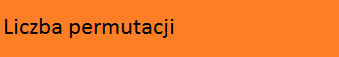
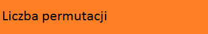
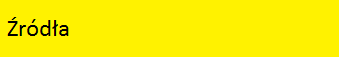
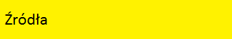
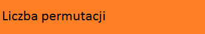
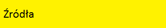

 



Kostka Rubika to zapewne dobrze wszystkim znana zabawka logiczna.
Została wynaleziona przez Ernő Rubika w 1974 roku.
Jej wynalazca po raz pierwszy układał ją miesiąc.
Wielu uważa, że do ułożenia kostki Rubika są potrzebne zdolności matematyczne.
Co prawda do ułożenia kostki nie jest to konieczne, lecz sama układanka ma wiele wspólnego z matematyką,
co przedstawię na tej stronie.
Kostka Rubika to układanka w kształcie sześcianu, składa się z 26 mniejszych sześciennych elementów:
Wprowadźmy też oznaczenie każdego elementu kostki. Przykładowo krawędź można oznaczyć dwoma literami oznaczającymi na których ściankach się znajduje np. górna krawędź na przedniej ściance będzie miała oznaczenie UF. Każdy narożnik można oznaczyć podobnie trzema literami np. narożnik w prawym górnym rogu przedniej ścianki można oznaczyć jako UFR